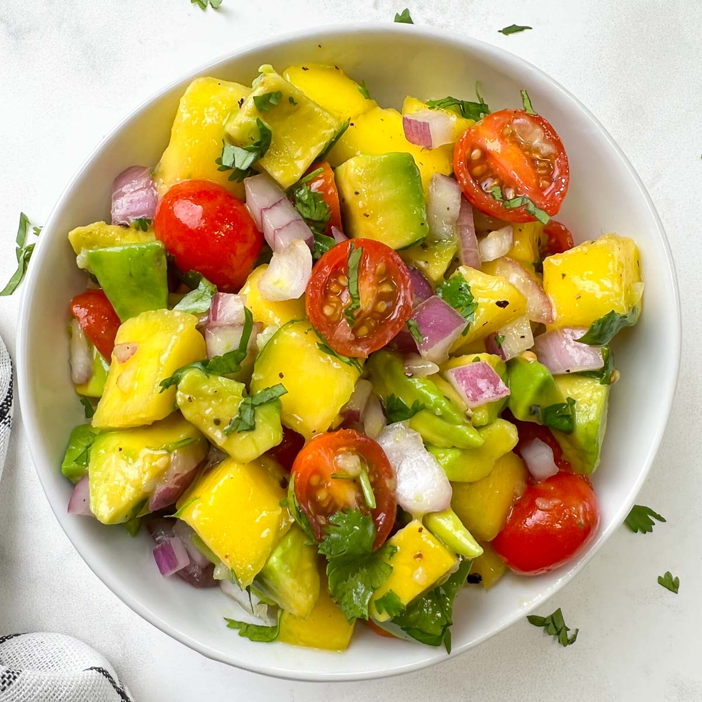

Avocado Salad

Description
This is an easy Avocado salad. Serves 2
Ingredients
- 1 Large Avocado
- Half large Cucumber
- Quarter Red Onion
- Half cup Cherry Tomatoes
- 1 tbsp Red wine Vinegar
- 2 tbsp Olive Oil
- Salt
- Pepper
- 1 tbspOregano
- Half Lime
- 1/4 bunch Parsley
- 1/4 bunch Cilantro
- Splash of Honey (optional)
Steps
- Cut Onions into 1/4 inch pieces and then place place in a seperate bowl with tbsp on Red Wine Vinegar and mix them all around. Let them sit while cutting the rest. This takes away the bite from the onion in the final product, if you enjoy the bite disregard this step (still add a splash of red wine vinegr at the end)
- Cut Cucubmber and Tomatoes to about 1/4 inch - 1/2 inch pieces
- Dice Cilantro and Parsely
- In a small bowl mix cilatnro, parsley, salt, pepper, oregano, olive oil, lime, and honey
- Add to large bowl with Cucumber, tomatoes, and onion
- Cut Avocado into 1/4-1/2 cubes and add to the bowl and mix
- Add more salt and pepper to taste